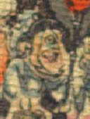

一つ目の鬼。頭に黒い頭巾状のものをかぶっている。大きな丸い目が額の真ん中につき、頬とあごに肉がたっぷりとついている。白い上着を身に着けている。
著作者：J.Dautremer／出典：親書誌：U426_nichibunken_0123：Le vieillard et les démons／日付：2006／資源識別子：U426_nichibunken_0123_0001_0008
Copyright (c)2010- International Research Center for Japanese Studies, Kyoto, Japan. All rights reserved.